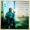

HTML5 audio/video support in Opera TV Store applications
Update history:
- Article updated on 30 March 2012 to suggest explicit
<source …>workaround. - Article updated on 18 April 2012 to include MPEG-1/MPEG-2 Audio Layer 3 audio codec for video and clarification on limitation of single
audio/videoelement playback on some of the current devices.
The Opera TV Store browser comes with built-in support for the HTML5 <audio> and <video>
elements, allowing developers to include multimedia content in their applications without any need for plugin-based solutions.
At its simplest, this means that multimedia elements can be included in a TV Store application by simply using markup such as:
<video src="/path/to/video.mp4"></video>
<audio src="/path/to/audio.mp3"></audio>Due to limitations in how multimedia content is handled on certain current devices, there are situations in which the type of audio/video content being used is not automatically inferred by file extensions or MIME types. For this reason, we suggest to use the more explicit, though slightly more wordy, variant:
<video>
<source src="/path/to/video.mp4" type="video/mp4">
</video>
<audio>
<source src="/path/to/audio.mp3" type="audio/mp3">
</audio>In contrast to the desktop version of Opera – where multimedia decoding and playback is handled directly by the browser) – the specifics of which codecs are supported on devices can vary considerably, as this depends on the underlying platform and integration work carried out by device manufacturers, as well as the specific version of the Opera TV Store that may be running on the device.
Additionally, due to the way some of the current devices have integrated audio and video support on their platform via an external media playback framework, it may not be possible to guarantee simultaneous playback of more than a single audio or video element.
At the time of publication, the following container formats and codecs are supported for Opera TV Store applications:
| Type | Media | MIME | Container | Video codec | Audio codec |
|---|---|---|---|---|---|
| Video | AVC | video/mp4 | MP4 | MPEG-4 AVC(H.264) Main and High Profiles Up to Level 4(inclusive) |
MPEG-1/MPEG-2 Audio Layer 3 Mono/Stereo 16-320kbps; SBR/VBR 32kHz/44.1kHz/48kHz |
| AAC-LC Mono/Stereo 16-320kbps; SBR/VBR 32kHz/44.1kHz/48kHz |
|||||
| HE-AAC Mono/Stereo 16-320kbps; SBR/VBR 32kHz/44.1kHz/48kHz |
|||||
| Audio | MP3 | audio/mp3 | MP3 | MPEG-1/MPEG-2 Audio Layer 3 Mono/Stereo 16-320kbps; SBR/VBR 32kHz/44.1kHz/48kHz |
|
| audio/mpeg | |||||
| AAC-LC | audio/mp4 | MP4 | AAC-LC Mono/Stereo 16-320kbps; SBR/VBR 32kHz/44.1kHz/48kHz |
||
| HE-AAC | audio/mp4 | MP4 | HE-AAC Mono/Stereo 16-320kbps; SBR/VBR 32kHz/44.1kHz/48kHz |
If you are testing your applications in the Opera TV Emulator, please note that – because of licensing reasons – the H.264 codecs are not installed by default. See the emulator's user guide for information of how to install these codecs separately.
For more on the basics of HTML5 <audio> and <video>, read
Introduction to HTML5 video.
Patrick H. Lauke

Web Evangelist in the Developer Relations Team at Opera Software ASA.
Product manager for Opera Dragonfly – Opera's built-in web developer tools.
http://www.opera.com/dragonfly/
This article is licensed under a Creative Commons Attribution 3.0 Unported license.
Comments
-

Hi, Does Opera browser for the TV supports "DivX Web Player" (or) any plugins available for the same ?
-

Hi Naveen. No, as far as I'm aware Opera on devices (and certainly the Opera TV Store specifically) doesn't support plugins.
-
Hi, Does Opera browser for the TV supports MP3 Shoutcast and AAC+ Streaming (ADTS) ?
-

Thanks Patrick for your reply.
-
Hi there,
-

Hi there. I'm trying to support opera tv, I got an app wich plays audio using soundmanager2 (http://www.schillmania.com/projects/soundmanager2/) .In Opera browser 12.11 everything works fine but in the opera tv emulator, app can't reproduce multiple sounds at same time. So App can't play ambient music and fx sounds simultaneously. Do you know if is this possible? Is there an API for that? I would like tu submit my app. thanks in advance.
-

Further to myTV Developers comment i need to find out if HLS is supported for apps in the Opera TV Store (sony devices)
-

Any idea why the Youtube HTML5 test page http://www.youtube.com/html5 states that h.264 is not supported by the Opera TV platform (both on the Opera TV emulator and real devices)? I am still looking for a way to play Youtube videos on the Opera TV platform :-(
No new comments accepted.Naveen Kumar K
Thursday, March 29, 2012
Patrick H. Lauke
Friday, March 30, 2012
mpontigg
Wednesday, May 30, 2012
Naveen Kumar K
Friday, June 15, 2012
Does any one know whether Opera TV browser can support .JPS and .MPO file formats ?
myTV Developer
Thursday, November 15, 2012
I am trying to run the player in Opera Emulator TV, but they are all unseccessfull. Ive tried m3u8 (HLS) and mp4. The thing is that I am trying to develop an app to sony devices using opera SDK3.3. I am in final stages finalizing the player. the problem is that I cannot play anything in the emulator.
1- Does opera supports m3u8? HLS? H264?
2- Is there any other alternative method that i can test the player on other device?
3- what if my app doesn't work on any sony device because it doesnt support certain codecs?
4- Is these problem will be solved in SDK3.4? and when it is planned to be launched?
Any help or hint will be greatly appreciated.
Fabian Marino
Thursday, November 29, 2012
Edward Hunton
Friday, November 30, 2012
looking at this doc: http://media.opera.com/media/b2b/tv/201201/Opera_Media_Streaming.pdf
it suggests this is the case, but where can i find out more info on this?
cmiessner
Friday, February 1, 2013